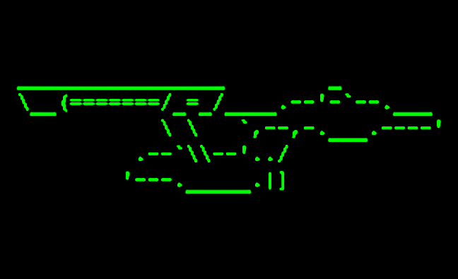
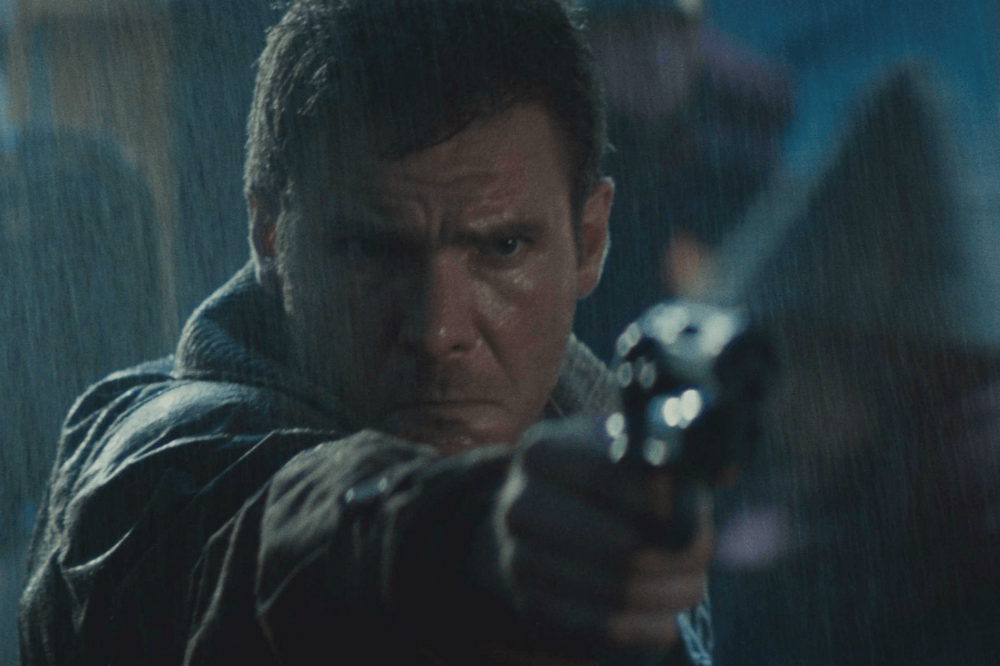
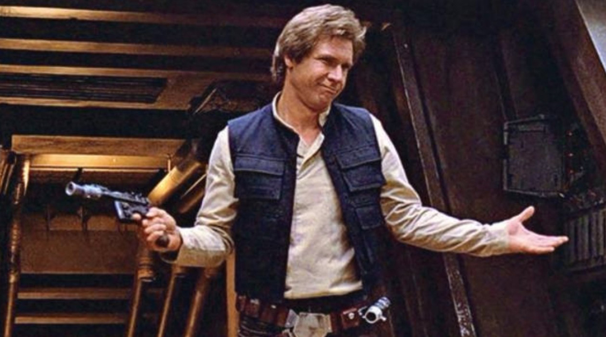
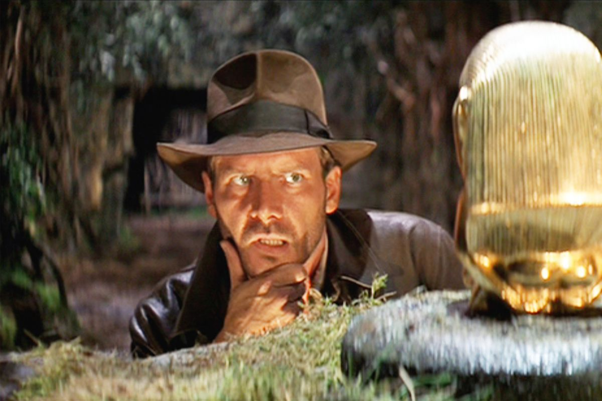

MegaCorp Terminal Console
- STC 8 Default MC/3215/3270 console
- STC 8 DMSK00I DYNAMASK DONE ****
- STC 8 IEF404I DYNAMASK - ENDED - TIME=07.51.46
- STC 8 $HASP395 DYNAMASK ENDED
- TSU 1 $HASP100 MCPRESENT01 ON TSOINRDR
- TSU 1 $HASP373 MCPRESENT01 STARTED
- JOB 2 IEF125I - LOGGED ON - TIME=07.56.68
- JOB 2 IEF401I HELLO - STARTED - TIME=08.26.09
$HASP309 INIT 1 INACTIVE ******** C=A
Copyright 1982
That was it - hope you enjoyed!
(Reaganomics will lead us through this yuppie Cold War! Praise be unto Mr. Ford!)
  Work Cited
Dominguez, Aurora. “Han Solo & The Five Reasons We Forever Love Him.” Frolic, 20 July 2020, frolic.media/hans-solo-and-the-five-reasons-we-love-him-2.
Fandom. “Vaporwave Dimension | Ultimas Cosmology Wiki | Fandom.” Ultimas Cosmology Wiki, 2021, ultimas-cosmology.fandom.com/wiki/Vaporwave_Dimension.
Good, Owen. “Bethesda Announces New Indiana Jones Game from Wolfenstein Developer.” Polygon, 12 Jan. 2021, www.polygon.com/2021/1/12/22226965/indiana-jones-video-game-bethesda-machinegames-release-date-teaser.
Graham, Geoff. “Typewriter Effect.” CSS-Tricks, 15 Dec. 2017, css-tricks.com/snippets/css/typewriter-effect.
History.com Editors. “The 1980s.” HISTORY, 7 June 2019, www.history.com/topics/1980s/1980s.
Mathews, Kevin. “BLADE RUNNER (STORY ANALYSIS).” POWER OF POP, 18 June 2021, www.powerofpop.com/blade-runner-story-analysis.
Shoard, Catherine. “ET and Back to the Future Producer Vows Neither Movie Will Be Remade.” The Guardian, 1 Dec. 2016, www.theguardian.com/film/2016/nov/30/et-and-back-to-the-future-wont-be-remade-frank-marshall.
Smith, Tony. “Star Trek: The Original Computer Game.” The Register, 7 May 2013, www.theregister.com/2013/05/03/antique_code_show_star_trek.